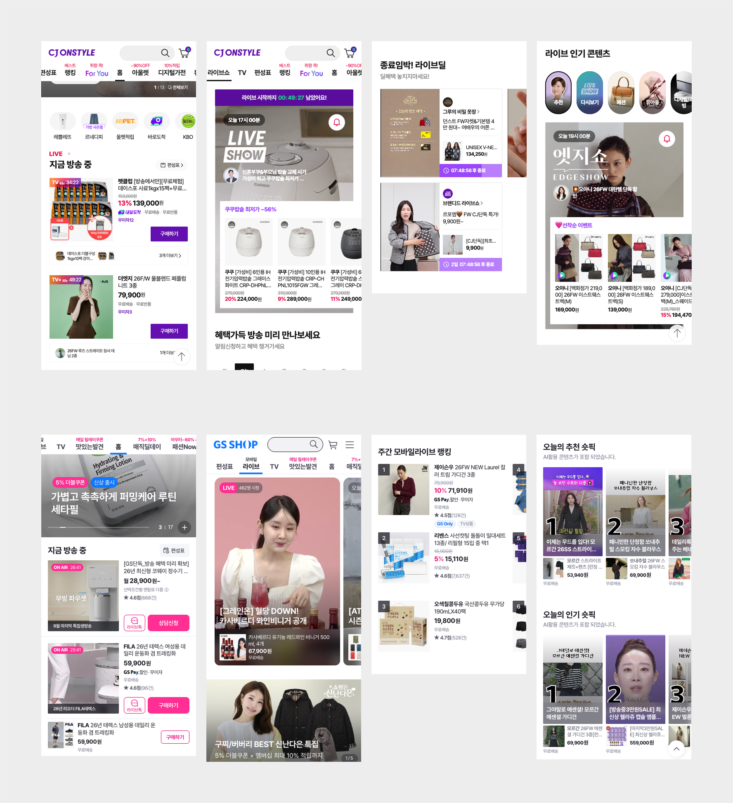

편성 구조
| 사례 | 편성 구조 | 시간대 |
|---|---|---|
| 올리브영 올영라이브 | 700회 이상 방송 축적 / 오리지널, 파트너 라이브 운영 / 세일 기간 오리지널, 파트너 확대 편성 | 평일 20시 / 월 12시 |
| 29CM 겨울 이구위크 (2025.11) | 연중 최대 할인 행사, 10일간(11.3-13) 매일 20시 본방, 5일은 18시 추가, 29라이브 총 14회 확대 편성 / 원브랜드데이 하루 단위 집중 | 매일 20시 (+18시) |
| 29CM 이구패션위크 라이브 (2026.9) | 9.1-15, 13개 브랜드 각 회차 단독 편성, 매일 20시 1회(총 13회), 브랜드별 단독+중복 혜택 | 매일 20시 |
| 컬리 뷰티컬리페스타 | 월별 테마, 브랜드데이 2-3일 단위 / 그랜드뷰컬페 분기 1회 | 20시 30분 |
| 지그재그 | 쇼핑몰 카테고리 매주 월요일 21시 고정, 단독 40회 + 연합 별도 | 매주 월 21시 |
블프 연계 성과
| 플랫폼 | 사례 | 성과 |
|---|---|---|
| 지그재그 | 블랙프라이데이 기획전 연계 라이브 (레트로 게임 콘셉트) | 시청자 32만 명 초과, 역대 최고 채팅 수, 참여 쇼핑몰 거래액 평균 7배(662%) |
| 에이블리 | 정기 행사 메가세일 (2025.10) 기간 쇼핑몰 라이브 | 언더비 24배(2342%), 베니토 17배(1628%), 베이델리 4.5배(350%) |
홈쇼핑사
라이브
노출 방식
| 구성 | CJ온스타일 | GS SHOP |
|---|---|---|
| 홈 내 라이브 | 지금 방송 중 모듈 + 편성표 바로가기, 카드에 상품 가격과 구매하기 | 지금 방송 중 모듈 + 편성표 바로가기, ON AIR 타이머, 라이브톡 · 상담신청 |
| 라이브 전용 탭 | GNB 최상단 라이브쇼 탭, 추천 · 다시보기 · 카테고리 필터 | GNB 라이브 탭, 전체화면 라이브 카드 + 시청자 수, 가로 스와이프 |
| 방송 전 | 카운트다운(라이브 시작까지 00:49:27) + 알림 벨, 방송 상품 미리보기, 날짜 선택 | 방송 예고 배너 |
| 방송 중 | 카드에 남은 시간, 상품 가격과 구매하기 노출 | ON AIR 타이머, 시청자 수, 상품 오버레이 |
| 방송 후 | 종료임박 라이브딜 — 딜 잔여 시간(07:48:56 후 종료)으로 계속 판매 | 주간 모바일라이브 랭킹 |
| 파생 콘텐츠 | 라이브 인기 콘텐츠, 선착순 이벤트 | 오늘의 추천 숏픽 / 인기 숏폼 (AI 활용) |
| 혜택 표기 | 최저가 ~56% 등 숫자를 카드에 노출 | 5% 더블쿠폰 + 멤버십 최대 10% 적립을 문장으로 노출 |
올리브영
노출구좌
및 시간
| 구좌 | 노출 시간 | 구분 |
|---|---|---|
| 라이브관 (APP 내) | D-7 ~ 종료 시 | 고정 |
| 이벤트 페이지 (알림받기) | D-1 | 고정 |
| APP 홈 메인 라이브 영역 | D-Day 00:00 ~ 종료 시 | 고정 |
| 메인 롤링 배너 | D-Day 00:00 ~ 종료 시 | 고정 |
| 하단 넛지 | 방송 30분 전 ~ 종료 시 | 고정 |
| APP PUSH | 19:50 ~ | 고정 |
| 올영라이브 카카오톡 친구톡 | 라이브 시작 직후 (모수 12.6만, 24.10 기준) | 고정 |
| 올리브영 인스타그램 | 월/목 10:00 ~ 익일 09:59 (파트너 라이브 제외) | 일부 방송 |
| 매장 LCD (오프라인) | 주 단위, 월~금 방송 기준 D-1 ~ 목 노출 | 고정 |
인스타그램은 파트너 라이브에는 제공되지 않습니다. 자사 노출 구좌 설계 시 D-7(라이브관), D-1(알림), 방송 30분 전(넛지), 19:50(푸시)의 시점별 노출 단계 구조가 참고점입니다.
A 트랙 적용
| 시사점 | 근거 사례 | A 트랙 적용 |
|---|---|---|
| 프로모션 기간 라이브가 상시 대비 고효율 | 에이블리 메가세일 / 지그재그 블프 | 전관 최대 트래픽 시점에 라이브 연계 |
| 요일, 시간 고정 편성이 표준 | 지그재그 매주 월 21시 | 전관 기간 내 데일리 본방 + 요일 테마 |
| 단독 + 연합 이원 편성 | 지그재그 단독 약 40회 / 연합 별도 | Tier 1(단독), Tier 2(연합) 구조와 일치 |
| 브랜딩형 라이브 (상품설명 탈피) | 지그재그 오프 더 레코드 | 고가 상품 소재, 브랜드 스토리 전달에 응용 |
| 방송을 보지 않아도 카드에서 구매 | CJ온스타일, GS SHOP 지금 방송 중 카드에 가격 · 구매하기 노출 | 회차 카드의 상품 보러가기를 매출 회수의 주 장치로 설계 |
| 방송 후에도 혜택 잔여 시간으로 판매 | CJ온스타일 종료임박 라이브딜 (딜 잔여 시간 노출) | 종료 회차 혜택을 일정 시간 유지하는 방식 검토 (가능 여부 확인 필요) |
배치 전략
| 구좌 | 역할 | 블프 기간 운영 |
|---|---|---|
| 프로모션 하위 라이브 탭 | 라이브 전용 목적지 | 행사 기간에만 노출, 편성 · 알림 · 혜택에 집중 |
| 프로모션 상품 카드 | 상품 리스트에서 라이브로 회수 | 라이브 예정 뱃지 + 알림 신청 (개발실 확인 필요) |
| 상시 라이브 페이지 | 다시보기 수용 | 종료 회차를 다시보기로 연결 (탭 종료 후 동선) |
전관 안에서는 라이브가 섹션의 하나임을 인지하여 구좌를 3개 이내로 제한하고, 라이브 탭 안에서 밀도를 확보. KV 바로 아래에 라이브를 배치하는 것은 전관 구성상 어렵고, 플로팅 미니 플레이어는 방송을 시청한 사용자에게만 노출되는 구조이므로 전관 하위 라이브 탭 안에서 효율적인 구좌 활용 필요
라이브 탭 구성
| 블록 | 내용 | 핵심 장치 |
|---|---|---|
| 1. 탭 헤더 | 행사 라이브 이름, 편성 요약 한 줄 | 전체 알림 받기 (개발실 확인 필요, 레퍼런스) |
| 2. 회차 편성 | 회차 선택 + 회차 카드 (브랜드, 테마, 대표 혜택) | 상태 버튼(알림 신청 → 입장 → 다시보기), 상품 보러가기 |
| 3. 알림 혜택 | 알림 신청자 혜택 안내 | 알림 신청 이벤트 (이벤트 필요여부 확인 필요) |
방송 회차 편성 영역 카드의 버튼이 방송 전, 중, 후로 바뀌므로 상태 표현이 카드 안에서 끝나고, 편성 방식이 확정되지 않아도 화면이 흔들리지 않게끔 검토중. 회차를 가로로 나열할지 세로로 나열할지는 UI 구성 단계에서 검토 필요
편성 전략
| 구분 | 1안 · 데일리형 | 2안 · 원데이형 |
|---|---|---|
| 편성 | 7일간 매일 1회 (20시 전후) | 하루에 5회 연속 |
| 회차 묶음 기준 | 날짜 | 시간대 |
| 회차 카드 | 동일 | 동일 |
| 알림 | 전체 알림 + 회차별 개별 신청 | 전체 알림 + 회차 시작 리마인드 |
| 성격 | 누적 시청자 확보, 마지막 날 특집 편성 | 하루에 집중, 시간대별 테마 분리 |
두 안은 회차를 묶는 기준(날짜 / 시간대)만 다르고 회차 카드 구조는 같습니다. 화면을 한 벌로 만들어 두면 편성 방식이 나중에 정해져도 대응할 수 있으며, 이 구조는 A · B 트랙 공통입니다.
알림 이벤트
제안
| 제안 | 내용 | 근거 (29CM 이구패션위크) |
|---|---|---|
| 전체 알림 받기 | 탭 상단 토글로 전 회차를 한 번에 신청 | 라이브 탭 상단에 전체 알림 받기 제공 |
| 알림 신청 이벤트 | 신청자 대상 혜택 — 전원 라이브 전용 쿠폰 또는 추첨 적립금 | 사전 알림 신청 시 최대 29만원 적립금 추첨 |
| 방송 전 상품 담기 | 회차 카드에서 방송 상품을 미리 확인, 장바구니 유도 | 회차 카드 내 상품 보러가기 버튼 |
이벤트 실행 여부는 확정되지 않았으며 제안 단계입니다. 객단가 15-25만원 기준으로는 추첨보다 신청자 전원 쿠폰이 구매 전환에 직접적이지만, 예산이 고정된 경우 추첨이 비용 통제에 유리합니다.
컨셉
아이디어
| 구분 | 컨셉 |
|---|---|
| 소재 | 캐시미어 / 구스다운 / 울 코트 |
| 아이템 | 아우터 원 픽 / 니트 레이어링 |
| 체형, 핏 | 키 160 이하 코트 / 오버핏 vs 정핏 |
| TPO | 연말 모임 / 출근 / 여행룩 |
| 가격대 | 평생 소장 아우터 |
| 선물 | 머플러 / 장갑 / 니트 |
| 메가브랜드 | 단독 1시간 + 신상 선공개 |
A 트랙 요일 편성 예: 월 소재 / 화 아이템 / 수 체형,핏 / 목 TPO / 금 메가브랜드 / 토 선물 / 일 앙코르. 요일 고정 테마는 GS SHOP 선례가 있는 검증된 형식입니다.
브랜드 및
아이템
티어별 분류
| 구분 | Tier 1, 메가 | Tier 2, 시그니처 | Tier 3, 오픈 라이브 |
|---|---|---|---|
| 편성 형태 | 단독 본방 | 테마 연합 (2-3브랜드) | 숏폼 + 편성표 노출 |
| 슬롯 | 20시 프라임 1시간 | 18시 연합 방송 내 구획 | 라이브 상시 슬롯 |
| 성격 | 브랜드, 혜택 위주 쇼케이스 | 테마 안에서 비교, 병렬 | 상시 노출, 회유 |
| 적합 브랜드 | 인지도 높은 앵커 브랜드 (수입여성, 라코스테 등 라이브 탑티어) | 테마 적합 브랜드 (여성 컨템, 악세 브랜드 등) | 롱테일 브랜드 및 라이프 스타일 브랜드 |
| 제작 지원 | 풀 제작 | 부분 지원 | 최소 / 자체 |
| 주요 노출 구좌 | 라이브 탭 상단 회차 카드 + 단독 푸시 | 라이브 탭 편성 내 회차 + 연합 푸시 | 편성표 + 숏폼존 |
Tier 3은 인플루언서 오픈 라이브(소스라이브 경유, 외부 진행분)를 편성표에 편입하는 방안을 포함합니다. 편입 가능 여부는 협조 요청에서 검토합니다. 노출 구좌 행만 트랙별로 다르며, 나머지 골격은 A/B 공통입니다.
개발 /
유관부서
| No | 항목 | 부서 | 검토 내용 | 우선순위 |
|---|---|---|---|---|
| 1 | 프로모션 페이지 라이브 탭 신설 | 개발 / 기획 | 전관 프로모션 페이지 하위 탭에 라이브 탭 추가, 행사 기간에만 노출 | 높음 |
| 2 | 전체 알림 받기 | 개발 / 기획 | 라이브 탭 상단에서 전 회차 알림을 한 번에 신청, 회차별 개별 신청과 병행, 신청자 대상 푸시 발송 | 높음 |
| 3 | 회차 카드 상태 처리 | 개발 | 회차 카드가 방송 전(알림 신청) / 중(입장) / 후(다시보기)로 바뀌는 처리 | 높음 |
| 4 | 회차 노출 UI | 개발 | 회차를 가로 나열(스와이프)로 노출 가능한지, 세로 나열만 가능한지 대응 범위 확인 | 중간 |
| 5 | 상품 카드 라이브 뱃지 | 개발 | 프로모션 상품 리스트 카드에 라이브 예정 뱃지, 알림 신청 연동 (개발실 확인 요청) | 중간 |
| 6 | 다시보기 게이트 | 개발 / 기획 | 종료 회차를 상시 라이브 페이지 다시보기로 연결 | 중간 |
| 7 | 라이브 알림 신청 이벤트 | 기획 / 마케팅 | 알림 신청자 대상 적립금, 쿠폰 추첨 이벤트 운영 가능 여부 | 중간 |
| 8 | 서드파티 오픈 라이브 편성표 편입 | 개발 / 기획 | 소스라이브 오픈 라이브를 라이브 탭 편성표에 편입, 편성 데이터 / API 연동 범위 확인 | 높음 |
| 9 | 편성 노출 방식, 정렬 | 기획 / 운영 | 자율 편성 건을 편성표 / 숏폼존에 노출, 정렬, 사전 등록 프로세스 | 중간 |
| 10 | 상품 연결, 성과 트래킹 | 개발 / 커머스 | 오픈 라이브에서 상품 연결 및 유입, 구매 집계 가능 여부 | 중간 |
전관 행사
연계안
시안이 보이지 않으면 Figma 파일 공유 설정이 "링크가 있는 모든 사용자"인지 확인이 필요합니다. 원본 링크: Figma에서 열기
편성 구조
독립 유입,
멀티 채널
| 플랫폼 | 사례 | 내용 |
|---|---|---|
| 에이블리 | 라이브 방송 채널 운영 | 앱 외 공식 인스타그램, 유튜브 채널에서도 송출, 앱 외부에서 독립적으로 시청자 확보 |
| 지그재그 | 오프 더 레코드 | 대표 인터뷰, 작업실 투어 숏 다큐멘터리 형식, 행사 자체가 독립 콘텐츠 소재 |
| 컬리 그랜드뷰컬페 | 분기 1회 강화 행사 | 전관과 별개로 행사명 자체를 브랜딩, 정기 독립 행사로 인지 |
B 트랙은 전관 트래픽에 기대지 않으므로, 독립적으로 시청자를 확보한 사례(멀티 채널 송출, 행사 자체의 콘텐츠화)가 근거가 됩니다.
홈쇼핑사
라이브
노출 방식
| 구성 | CJ온스타일 | GS SHOP |
|---|---|---|
| 홈 내 라이브 | 지금 방송 중 모듈 + 편성표 바로가기, 카드에 상품 가격과 구매하기 | 지금 방송 중 모듈 + 편성표 바로가기, ON AIR 타이머, 라이브톡 · 상담신청 |
| 라이브 전용 탭 | GNB 최상단 라이브쇼 탭, 추천 · 다시보기 · 카테고리 필터 | GNB 라이브 탭, 전체화면 라이브 카드 + 시청자 수, 가로 스와이프 |
| 방송 전 | 카운트다운(라이브 시작까지 00:49:27) + 알림 벨, 방송 상품 미리보기, 날짜 선택 | 방송 예고 배너 |
| 방송 중 | 카드에 남은 시간, 상품 가격과 구매하기 노출 | ON AIR 타이머, 시청자 수, 상품 오버레이 |
| 방송 후 | 종료임박 라이브딜 — 딜 잔여 시간(07:48:56 후 종료)으로 계속 판매 | 주간 모바일라이브 랭킹 |
| 파생 콘텐츠 | 라이브 인기 콘텐츠, 선착순 이벤트 | 오늘의 추천 숏픽 / 인기 숏폼 (AI 활용) |
| 혜택 표기 | 최저가 ~56% 등 숫자를 카드에 노출 | 5% 더블쿠폰 + 멤버십 최대 10% 적립을 문장으로 노출 |

29CM 라이브
적립금 이벤트
| 이벤트 | 트리거 | 혜택 (추첨) |
|---|---|---|
| 라이브 알림 신청 | 전체 알림 신청 | 헤드폰 1명 / 적립금 29만원 3명 / 2.9만원 25명 |
| 라이브 구매 | 라이브 1개 이상 시청 + 29만원 이상 구매 | 적립금 29만원 5명 |
| 취향 공유 | 공유 링크로 친구 방문, 가입, 첫 구매 | 방문, 가입 적립금 + 초대 상위 5명 최대 29만원 |
2026 이구패션위크 라이브(9.1-15) 페이지에서 확인된 타사 사실입니다. 시청, 구매, 공유를 트리거로 한 적립금 추첨 구조로, 전 구매자 지급이 아닌 추첨 방식입니다.
단독 행사
적용
| 시사점 | 근거 사례 | 단독 행사 적용 |
|---|---|---|
| 멀티 채널 송출로 독립 도달 확보 | 에이블리 앱 / 인스타그램 / 유튜브 | 전관이 없으므로 채널별 도달 합계가 거래액의 상한이 됨 |
| 회차를 모아야 화력이 생김 | 29CM 원브랜드데이 하루 단위 집중 / 컬리 그랜드뷰컬페 분기 1회 | 앵커 브랜드 단독 회차에 편성과 혜택을 집중 |
| 알림과 전용 혜택이 전환 장치 | 29CM 라이브 알림 신청 이벤트, 라이브 전용 혜택 | 회차별 알림 신청 + 라이브 전용 쿠폰으로 회차 전환율 확보 |
| 행사명이 있어야 회차가 누적 인지됨 | 컬리 그랜드뷰컬페 / 29CM 이구위크, 이구패션위크 / 올리브영 올영라이브 | 행사명 확정 필요, 정기화는 1회차 성과 확인 후 판단 |
| 요일, 시간 고정 편성이 표준 | 지그재그 매주 월 21시 | 독립 편성이므로 시간대 자유, 객단가 고려해 20시 프라임 확보 |
| 방송을 보지 않아도 카드에서 구매 | CJ온스타일, GS SHOP 지금 방송 중 카드에 가격 · 구매하기 노출 | 라이브 페이지 회차 카드의 상품 보러가기를 매출 회수의 주 장치로 설계 |
| 방송 후에도 혜택 잔여 시간으로 판매 | CJ온스타일 종료임박 라이브딜 (딜 잔여 시간 노출) | 종료 회차 혜택을 일정 시간 유지하는 방식 검토 (가능 여부 확인 필요) |
배치 전략
| 구좌 | 평소 | 라이브 데이 기간 |
|---|---|---|
| 페이지 최상단 | 상시 편성 안내 | 행사 히어로 — 행사명 (행사명 확정 필요), 기간, 편성 요약 |
| 편성 영역 | 상시 편성표 | 행사 회차 우선 정렬 + 행사 뱃지 |
| 혜택 영역 | 해당 없음 | 라이브 전용 쿠폰, 알림 신청 이벤트 |
| 다시보기 | 상시 VOD | 행사 회차 상단 고정 |
독립 행사 페이지를 신설하지 않고 상시 라이브 페이지를 행사 기간에만 행사 모드로 전환하여 사용. 다시보기가 같은 페이지 안에 있어 동선이 끊기지 않고, 행사 시즌에 맞는 오케이션별 상품 제안 및 혜택내용 추가로 이벤트성 페이지로의 운영이 용이할 것으로 예상.
행사 영역 구성
| 블록 | 내용 | 핵심 장치 |
|---|---|---|
| 1. 행사 히어로 | 행사명 (확정 필요), 기간, 편성 요약 한 줄 | 행사 인지, 회차 바로가기 |
| 2. 회차 편성 | 회차 선택 + 회차 카드 (브랜드, 테마, 대표 혜택) | 상태 버튼(알림 신청 → 입장 → 다시보기), 상품 보러가기 |
| 3. 오케이션 제안 | 시즌 오케이션별 상품 제안(예: 직장인 출근룩), 라이브 상품 사전 소개 영상, 연계 상품 묶음 | 자체 제작 컨텐츠, 연계 상품 노출로 매출 집중 |
| 4. 혜택 | 라이브 전용 쿠폰, 방송 중 한정가 | 구매 전환 장치 |
| 5. 다시보기 | 종료 회차 VOD, 숏폼 | 행사 회차 상단 고정 |
A 트랙 라이브 탭이 3개 블록으로 절제되는 것과 달리, 상시 라이브 페이지는 라이브가 주인공이므로 혜택과 다시보기를 각각 독립 블록으로 둘 수 있습니다.
유입 동선
| 채널 | 역할 | 확인 필요 |
|---|---|---|
| LFmall 홈 | 주 유입 | 행사 기간 노출 구좌 확보, 롤링 아래 띠배너(라이브 시), 서비스네비 아래 바로 라이브 카드 등 |
| 추가 구좌 | 노출 확대 | floating 배너, 라이브 탭(베스트 옆), GNB 로고에 라이브 위크 로고 플레이 등 |
| APP PUSH | 방송 리마인드 | 알림 신청자 발송과 전체 발송 분리 |
| 카카오 친구톡 | 사전 고지 | 발송 모수, 발송 시점 (올리브영 운영 사례 있음) |
| 인스타그램, 유튜브 동시 송출 | 앱 밖 도달 | 소스라이브 송출 가능 여부 (에이블리 사례) |
| 숏폼 | 방송 예고 | 사전 티저 제작 범위, 인스타그램 노출 |
전관 트래픽이 없으므로 유입 동선 자체가 B 트랙의 핵심 전략.
편성 전략
| 구분 | 1안: 데일리형 | 2안: 원데이형 |
|---|---|---|
| 편성 시간 | 7일간 매일 1회 (20시 전후) | 하루에 5회 연속 |
| 방송 묶음 기준 | 날짜 | 시간대 |
| 적합 조건 | 참여 브랜드가 많고 회차별 테마가 분산될 때 | 앵커 브랜드 중심으로 하루에 화력을 모을 때 |
| 유입 운영 | 매일 푸시 + 홈 배너 상시 | 당일 집중 푸시 + 사전 티저 강화 |
| 성과 기준 | 기간 누적 거래액 | 당일 거래액 |
시점은 전관 행사와 겹치지 않게 잡되, 전관의 사전 행사가 아니라 독립 행사로 운영하며 성과도 행사 자체의 거래액으로 판단하는 것으로 제안함. (회차당 목표 거래액은 상시 라이브 포맷 기준을 따름)
컨셉
아이디어
| 구분 | 컨셉 |
|---|---|
| 소재 | 캐시미어 / 구스다운 / 울 코트 |
| 아이템 | 아우터 원 픽 / 니트 레이어링 |
| 체형, 핏 | 키 160 이하 코트 / 오버핏 vs 정핏 |
| TPO | 연말 모임 / 출근 / 여행룩 |
| 가격대 | 평생 소장 아우터 |
| 선물 | 머플러 / 장갑 / 니트 |
| 메가브랜드 | 단독 1시간 + 신상 선공개 |
독립 행사 아이덴티티에 맞춰 컨셉을 선별하거나 별도 컨셉 정의하는 것을 제안 (전략 확정 후 구체화)
브랜드 및
아이템
티어별 분류
| 구분 | Tier 1, 메가 | Tier 2, 시그니처 | Tier 3, 오픈 라이브 |
|---|---|---|---|
| 편성 형태 | 단독 본방 | 테마 연합 (2-3브랜드) | 숏폼 + 편성표 노출 |
| 슬롯 | 20시 프라임 1시간 | 18시 연합 방송 내 구획 | 라이브 상시 슬롯 |
| 성격 | 브랜드, 혜택 위주 쇼케이스 | 테마 안에서 비교, 병렬 | 상시 노출, 회유 |
| 적합 브랜드 | 인지도 높은 앵커 브랜드 (수입여성, 라코스테 등 라이브 탑티어) | 테마 적합 브랜드 (여성 컨템, 악세 브랜드 등) | 롱테일 브랜드 및 라이프 스타일 브랜드 |
| 제작 지원 | 풀 제작 | 부분 지원 | 최소 / 자체 |
| 주요 노출 구좌 | 라이브 페이지 히어로 및 해당 상품 상품상세 띠배너 | 라이브 페이지 히어로, 상품 구좌 | 편성표 + 숏폼존 |
개발 /
유관부서
| No | 항목 | 부서 | 검토 내용 | 우선순위 |
|---|---|---|---|---|
| 1 | 상시 라이브 페이지 행사 모드 | 개발 / 기획 | 상시 라이브 페이지에 행사 기간에만 노출되는 행사 영역(히어로, 혜택) 추가 가능 여부 | 높음 |
| 2 | 행사 회차 우선 정렬 | 개발 | 행사 기간 편성표에서 행사 회차를 상단 고정, 행사 뱃지 노출 | 높음 |
| 3 | 유입 동선 확보 | 기획 / 마케팅 | 홈 배너, 푸시, 카카오 친구톡 등 행사 기간 노출 구좌와 발송 계획 | 높음 |
| 4 | 외부 채널 동시 송출 | 개발 / 마케팅 | 소스라이브를 통한 인스타그램, 유튜브 동시 송출 가능 여부 | 중간 |
| 5 | 다시보기 상단 고정 | 개발 | 행사 종료 회차 VOD를 다시보기 영역 상단에 고정 | 중간 |
| 6 | 서드파티 오픈 라이브 편성표 편입 | 개발 / 기획 | 소스라이브 오픈 라이브를 편성표에 편입, 연동 범위 확인 | 높음 |
| 7 | 편성 노출 방식, 정렬 | 기획 / 운영 | 자율 편성 건을 편성표 / 숏폼존에 노출, 정렬, 사전 등록 | 중간 |
| 8 | 상품 연결, 성과 트래킹 | 개발 / 커머스 | 오픈 라이브에서 상품 연결 및 유입, 구매 집계 가능 여부 | 중간 |
1-5번은 B 트랙 고유 항목이며, 6-8번은 A 트랙과 동일하게 적용됩니다. 전체 알림 받기는 B 트랙에서 적용이 어려워 회차별 개별 알림 신청으로 운영합니다.
라이브 데이
단독 행사안
시안이 보이지 않으면 Figma 파일 공유 설정이 "링크가 있는 모든 사용자"인지 확인이 필요합니다. 원본 링크: Figma에서 열기